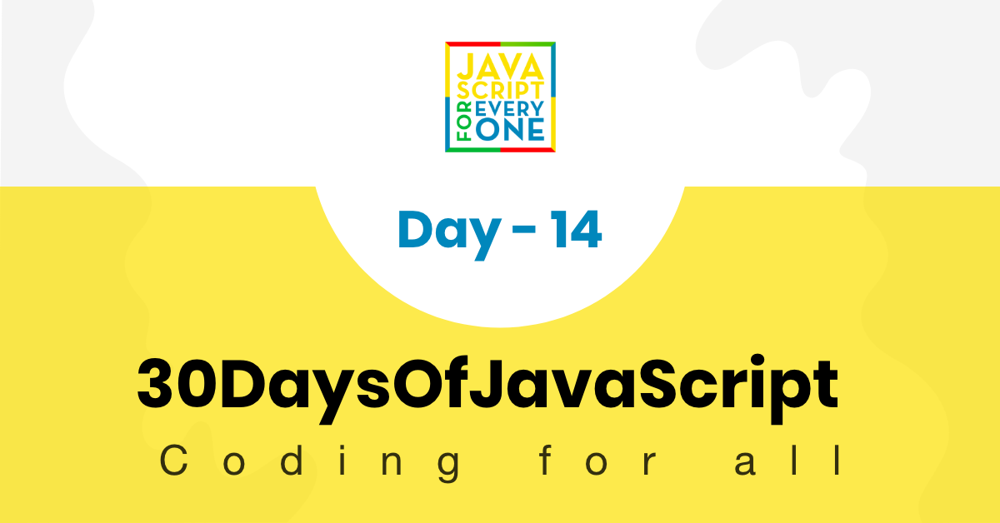

JavaScript is a loosely-typed language. Some times you will get a runtime error when you try to access an undefined variable or call undefined function etc.
JavaScript similar to python or Java provides an error-handling mechanism to catch runtime errors using try-catch-finally block.
try {
// code that may throw an error
} catch (err) {
// code to be executed if an error occurs
} finally {
// code to be executed regardless of an error occurs or not
}
try: wrap suspicious code that may throw an error in try block.The try statement allows us to define a block of code to be tested for errors while it is being executed.
catch: write code to do something in catch block when an error occurs. The catch block can have parameters that will give you error information. Catch block is used to log an error or display specific messages to the user.
finally: finally block will always be executed regardless of the occurrence of an error. The finally block can be used to complete the remaining task or reset variables that might have changed before error occurred in try block.
Example:
try {
let lastName = 'Yetayeh'
let fullName = fistName + ' ' + lastName
} catch (err) {
console.log(err)
}
ReferenceError: fistName is not defined
at <anonymous>:4:20
try {
let lastName = 'Yetayeh'
let fullName = fistName + ' ' + lastName
} catch (err) {
console.error(err) // we can use console.log() or console.error()
} finally {
console.log('In any case I will be executed')
}
ReferenceError: fistName is not defined
at <anonymous>:4:20
In any case it will be executed
The catch block take a parameter. It is common to pass e, err or error as a parameter to the catch block. This parameter is an object and it has name and message keys. Lets use the name and message.
try {
let lastName = 'Yetayeh'
let fullName = fistName + ' ' + lastName
} catch (err) {
console.log('Name of the error', err.name)
console.log('Error message', err.message)
} finally {
console.log('In any case I will be executed')
}
Name of the error ReferenceError
Error message fistName is not defined
In any case I will be executed
throw: the throw statement allows us to create a custom error. We can through a string, number, boolean or an object. Use the throw statement to throw an exception. When you throw an exception, expression specifies the value of the exception. Each of the following throws an exception:
throw 'Error2' // generates an exception with a string value
throw 42 // generates an exception with the value 42
throw true // generates an exception with the value true
throw new Error('Required') // generates an error object with the message of Required
const throwErrorExampleFun = () => {
let message
let x = prompt('Enter a number: ')
try {
if (x == '') throw 'empty'
if (isNaN(x)) throw 'not a number'
x = Number(x)
if (x < 5) throw 'too low'
if (x > 10) throw 'too high'
} catch (err) {
console.log(err)
}
}
throwErrorExampleFun()
let firstName = 'Asabeneh'
let fullName = firstName + ' ' + lastName
console.log(fullName)
Uncaught ReferenceError: lastName is not defined
at <anonymous>:2:35
let square = 2 x 2
console.log(square)
console.log('Hello, world")
Uncaught SyntaxError: Unexpected identifier
let num = 10
console.log(num.toLowerCase())
Uncaught TypeError: num.toLowerCase is not a function
at <anonymous>:2:17
These are some of the common error you may face when you write a code. Understanding errors can help you to know what mistakes you made and it will help you to debug your code fast. 🌕 You are flawless. Now, you knew how to handle errors and you can write robust application which handle unexpected user inputs. You have just completed day 14 challenges and you are 14 steps a head in to your way to greatness. Now do some exercises for your brain and for your muscle.
Practice
Practice